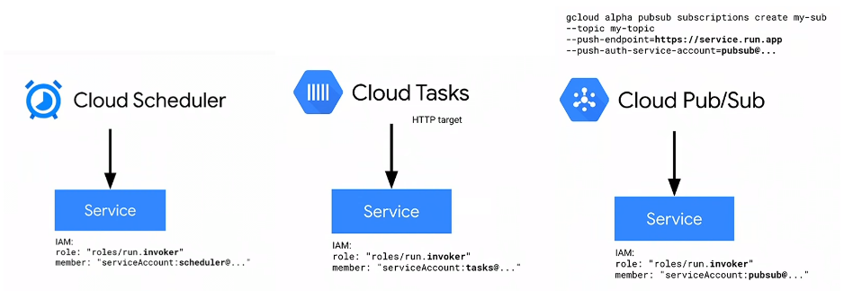
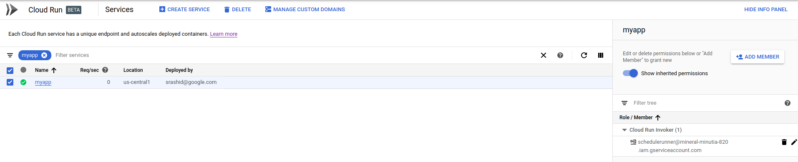
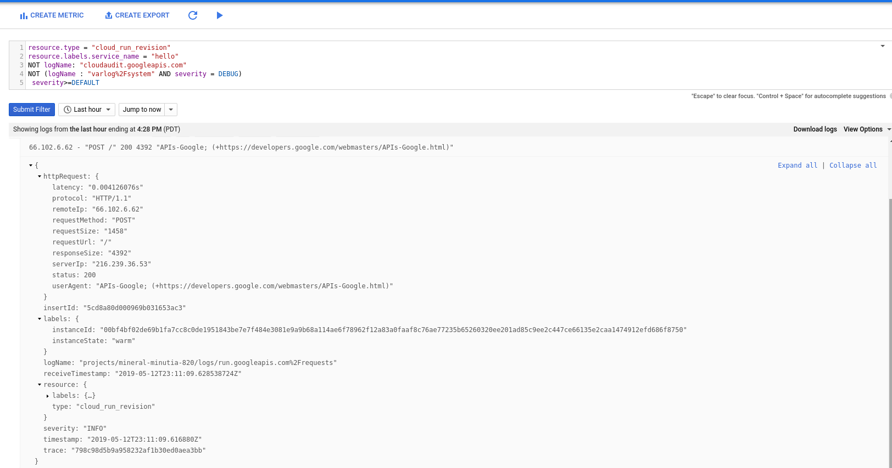
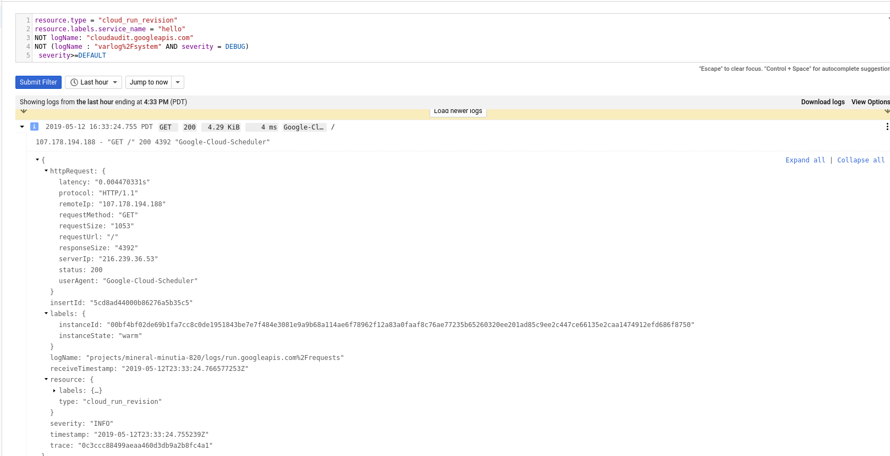
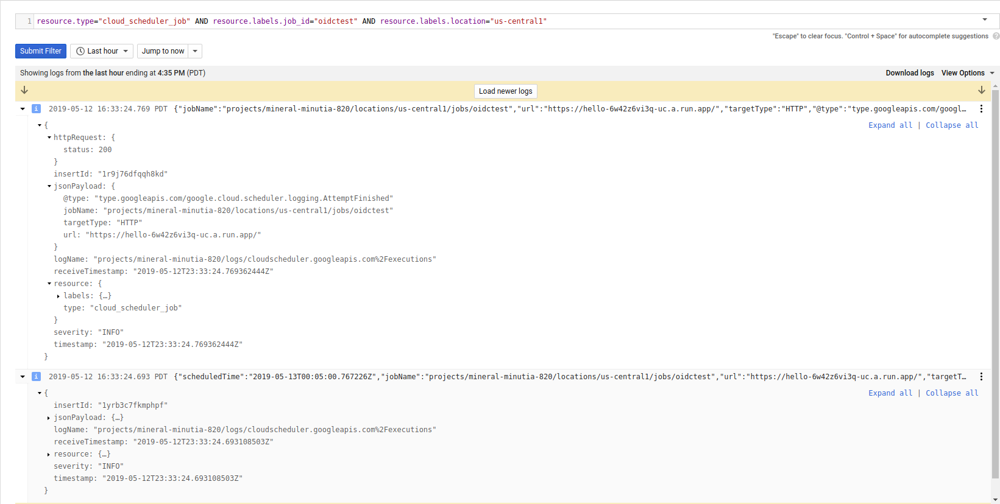

ARTICLES
Automatic OIDC: Using Cloud Scheduler, Tasks, and PubSub to make authenticated calls to Cloud Run, Cloud Functions or your Server
This is a second in a series related to a versatile feature in Cloud Scheduler and Cloud Tasks and Cloud PubSub that automatically emits google OpenIDConnect and oauth2 access_token to outbound webhook calls. When a Scheduled task fires and calls an HTTP endpoint, it can automatically carry credentials to authenticate itself. The id_token credential can then get validated at the HTTP web-hook target using well known techniques (i.,e validate the signature and aud: fields in the token). Certain GCP services have built-in validation for this token and you can even apply IAM allow/deny policies for the user behind the token.
That is, this article focuses on (B) below, while the first part in the series is (A)
A) oauth2
access_tokens- would allow you to directly call a Google Rest API endpoint
- https://developers.google.com/identity/protocols/OAuth2
B) Google-issued OpenID Connect
id_tokens- would allow you to call any arbitrary endpoint which accepted an OpenID
id_tokenin the payload. - https://openid.net/specs/openid-connect-core-1_0.html#CodeIDToken
- would allow you to call any arbitrary endpoint which accepted an OpenID
For more information about the above two authentication systems, see:
Supported Services
oauth2 (access_tokens)
- From Any of:
[Cloud Scheduler, Cloud Tasks]
you can emit access_token
- to Any of:
[ GCP REST API endopoint]
OIDC (id_tokens)
- From Any of:
[ Cloud Scheduler, Cloud Tasks, Cloud PubSub* ]
you can emit id_token
- to Any of:
[Cloud Run, Cloud Functions, Cloud Enpoints, Istio, {your application} ]
Specific services like Cloud Run, Cloud Functions and Cloud Endpoints can automatically validate the inbound id_token and check if it is properly signed by Google. Furthermore, you can apply IAM policies for the user or service account associated with said token. In other words, you can construct an IAM policy on Cloud Run that states “only allow this service account access where that account is one associated with a Cloud Scheduler job. For example, to secure Cloud Run, assign the IAM Role roles/run.invoker to the service behind the id_token (eg, Scheduler, Tasks or PubSub; as shown in the example in Scheduler --> Cloud Run below)

PubSub http_push targets are limited to domain verification
Create Service Account
First setup a specific service account you wish to scheduler to invoke the endpoint as. This is the service account that scheduler will run as and acquire the id_token for. The section after this, we will apply IAM policies for this service account for Cloud Scheduler
Note: Cloud Scheduler by default runs with a service account in the format service-$PROJECT_NUMBER@gcp-sa-cloudscheduler.iam.gserviceaccount.com
For other services:
- Cloud Scheduler: service-$PROJECT_NUMBER@gcp-sa-cloudscheduler.iam.gserviceaccount.com
- Cloud Tasks: service-$PROJECT_NUMBER@gcp-sa-cloudtasks.iam.gserviceaccount.com
- Cloud PubSub: service-$PROJECT_NUMBER@gcp-sa-cloudpubsub.iam.gserviceaccount.com
I listed pubsub there for completeness but Pubsub only emits oidc tokens while Scheduler and Tasks can emit BOTH oidc and oauth2. The followup article about oidc tokens demonstrates how to setup Pubsub
Setup environment variables
export PROJECT_ID=`gcloud config get-value core/project` export PROJECT_NUMBER=`gcloud projects describe $PROJECT_ID --format='value(projectNumber)'`- Create Scheduler Service Account
gcloud iam service-accounts create schedulerunner --display-name="Task Schedule Runner" $ gcloud iam service-accounts list NAME EMAIL DISABLED Task Schedule Runner schedulerunner@$PROJECT_ID.iam.gserviceaccount.com FalseCreate an IAM Policy
This step will allow PubSub and Scheduler’s service accounts to acquire a token for schedulerunner@$PROJECT_ID.iam.gserviceaccount.com
(remember to substitute your PROJECT_NUMBER)
svc_policy.json:{ "bindings": [ { "members": [ "serviceAccount:service-$PROJECT_NUMBER@gcp-sa-pubsub.iam.gserviceaccount.com" ], "role": "roles/iam.serviceAccountTokenCreator" }, { "members": [ "serviceAccount:service-$PROJECT_NUMBER@gcp-sa-cloudscheduler.iam.gserviceaccount.com" ], "role": "roles/cloudscheduler.serviceAgent" } ], }- Apply Policy file so Scheduler can impersonate
$ gcloud iam service-accounts set-iam-policy schedulerunner@$PROJECT_ID.iam.gserviceaccount.com svc_policy.json -q

OIDC
The specific gcloud commands for Scheduler and PubSub to emit oidc tokens:
- Cloud Scheduler
gcloud beta scheduler jobs create http
| [--oidc-service-account-email=OIDC_SERVICE_ACCOUNT_EMAIL
: --oidc-token-audience=OIDC_TOKEN_AUDIENCE]] [GCLOUD_WIDE_FLAG ...]
- Cloud PubSub
gcloud alpha pubsub subscriptions create SUBSCRIPTION
[--push-auth-service-account=SERVICE_ACCOUNT_EMAIL]
[--push-auth-token-audience=OPTIONAL_AUDIENCE_OVERRIDE]
While on the validation, you can configure GCF to accept an oidc token:
- Cloud Functions
gcloud functions add-iam-policy-binding $FUNCTION_NAME \
--member serviceAccount:$SERVICE_ACCOUNT_A_EMAIL \
--role roles/cloudfunctions.invoker
OIDC Audience
A bit about the audience: field in OIDC tokens.
You must set this field for the invoking service and specify the fully qualified URL of the receiving service. For example, if you are invoking Cloud Run or Cloud Functions, the id_token must include the URL/path of the service.
{
"aud": "https://uri-of-intended-service",
"azp": "107145139691231222712",
"email": "service-$PROJECT_NUMBER@gcp-sa-cloudscheduler.iam.gserviceaccount.com",
"email_verified": true,
"exp": 1556665461,
"iat": 1556661861,
"iss": "https://accounts.google.com",
"sub": "107145139691231222712"
}
If the target is your own application endpoint, you must validate the inbound id_token. The appendix section shows token validation in python and envoy proxy.
Ok, now to the tests,
PubSub –> Cloud Run
In the first set of samples, we will integrate PubSub and Cloud Scheduler with Cloud Run
setup a sample Cloud Run Application with authentication enabled:
gcloud beta run deploy hello --image gcr.io/cloudrun/hello --region=us-central1 -q
Service [hello] revision [hello-00001] has been deployed and is serving traffic at https://hello-6w42z6vi3q-uc.a.run.app
Which means we need to add the originating serivce accounts (for PubSub and Scheduler) into roles/run.Invoker:

Now deploy a PubSub push notificatoin target. Remember to set the audience to the URL of the Run instance
gcloud alpha pubsub topics create runtopic
gcloud alpha pubsub subscriptions create psub --topic runtopic \
--push-endpoint https://hello-6w42z6vi3q-uc.a.run.app \
--push-auth-service-account=schedulerunner@$PROJECT_ID.iam.gserviceaccount.com \
--push-auth-token-audience=https://hello-6w42z6vi3q-uc.a.run.app
Publish a message
gcloud alpha pubsub topics publish runtopic --message='hello world'
See invocation on Cloud Run:

Scheduler –> Cloud Run
Similar to the above, invoke Cloud Run using a Scheduled Job
gcloud beta scheduler jobs create http oidctest --schedule "5 * * * *" --http-method=GET \
--uri=https://hello-6w42z6vi3q-uc.a.run.app \
--oidc-service-account-email=schedulerunner@$PROJECT_ID.iam.gserviceaccount.com \
--oidc-token-audience=https://hello-6w42z6vi3q-uc.a.run.app
For the impatient, invoke the scheduled job now
gcloud beta scheduler jobs run oidctest
Check logs In Cloud Run:

And corresponding in Cloud Scheduler:

Scheduler –> Cloud Functions
First lets setup a receiving cloud function with authentication
main.py:
def hello_http(request): request_json = request.get_json(silent=True) request_args = request.args return 'Hello World!'- Deploy ```
gcloud functions deploy authfn –entry-point=hello_http –trigger-http –runtime=python37
entryPoint: hello_http
name: authfn
httpsTrigger:
url: https://us-central1-$PROJECT_ID.cloudfunctions.net/authfn
name: projects/$PROJECT_ID/locations/us-central1/functions/authfn
> Note the `url`, we will use this later while defining the endpoints
- Apply security [bit.ly/gcf-iam-alpha](bit.ly/gcf-iam-alpha))
gcloud alpha functions add-iam-policy-binding authfn
–member serviceAccount:schedulerunner@$PROJECT_ID.iam.gserviceaccount.com
–role roles/cloudfunctions.invoker

- Deploy Scheduled Task
gcloud beta scheduler jobs create http gcftest –schedule “5 * * * *” –http-method=GET
–uri=https://us-central1-$PROJECT_ID.cloudfunctions.net/authfn
–oidc-service-account-email=schedulerunner@$PROJECT_ID.iam.gserviceaccount.com
–oidc-token-audience=https://us-central1-$PROJECT_ID.cloudfunctions.net/authfn
gcloud beta scheduler jobs run gcftest
Then on the Scheduler logs:

On GCF Logs

### Cloud PubSub --> Cloud Functions
As of `5/18/19`, PubSub does **NOT** allow registration of push endpoints to arbitrary http targets
gcloud alpha pubsub subscriptions create psubgcf –topic runtopic
–push-endpoint https://us-central1-$PROJECT_ID.cloudfunctions.net/authfn
–push-auth-service-account=schedulerunner@$PROJECT_ID.iam.gserviceaccount.com
–push-auth-token-audience=https://us-central1-$PROJECT_ID.cloudfunctions.net/authfn
gives
ERROR: Failed to create subscription [projects/@$PROJECT_ID/subscriptions/psubgcf]: The supplied HTTP URL is not registered in the subscription’s parent project (url=“https://us-central1-@$PROJECT_ID.cloudfunctions.net/authfn", project_id=“….”).
The domain `.coudfunctions.net` is not under a whitelist that allowed the earlier `PubSub` -> `CLoud Run` integration (i.,e an http target of`run.net` is whitelisted in PubSub).
* This will be addressed on GCP where you can whitelist `cloudfunctions.net` domain.
* Wokraround would be to setup [custom domains](https://cloud.google.com/pubsub/docs/push#domain_ownership_validation) for GCF (via Firebase Functions/hosting)
### Scheduler --> { your application }
Emitting an OIDC token from any of the above to _your_ application is pretty much the same. Specify the URL, audience during configuration and make sure the remote service you are running accepts https (and is not self-signed).
You can use the Python sample or Envoy to validate the token (see appendix below)
```bash
gcloud beta scheduler jobs create http apptest --schedule "5 * * * *" --http-method=GET \
--uri=https://your_app_url \
--oidc-service-account-email=schedulerunner@$PROJECT_ID.iam.gserviceaccount.com \
--oidc-token-audience=https://your_app_url
NOTE: your remote server mush have a valid SSL certificate and cannot be self-signed.
Cloud Task –> Cloud Run
I don’t have a sample handy but here is golang app that enqueues a Task that carries an oidc token:
location := "us-central1"
parent := "projects/" + projectID + "/locations/" + location + "/queues/" + queueName
taskName := parent + "/tasks/" + randTaskID
req := &taskspb.CreateTaskRequest{
Parent: parent,
Task: &taskspb.Task{
Name: taskName,
PayloadType: &taskspb.Task_HttpRequest{
HttpRequest: &taskspb.HttpRequest{
Url: "https://hello-6w42z6vi3q-uc.a.run.app",
HttpMethod: taskspb.HttpMethod_GET,
AuthorizationHeader: &taskspb.HttpRequest_OidcToken{
OidcToken: &taskspb.OidcToken{
ServiceAccountEmail: "schedulerunner@$PROJECT_ID.iam.gserviceaccount.com",
Audience: "https://hello-6w42z6vi3q-uc.a.run.app",
},
},
},
},
},
}
resp, err := c.CreateTask(ctx, req)
if err != nil {
log.Fatalf("ERROR: ", err.Error())
}
OIDC Verification
from google.oauth2 import id_token
import google.auth
import google.auth.transport.requests
target_audience = 'https://myapp-6w42z6vi3q-uc.a.run.app'
certs_url='https://www.googleapis.com/oauth2/v1/certs'
idt='<YOURIDTOKEN>'
request = google.auth.transport.requests.Request()
print id_token.verify_token(idt,request,certs_url=certs_url)
OIDC Creation
- Service Account
from google.oauth2 import id_token
from google.oauth2 import service_account
import google.auth
import google.auth.transport.requests
from google.auth.transport.requests import AuthorizedSession
target_audience = 'https://myapp-6w42z6vi3q-uc.a.run.app'
url = 'https://myapp-6w42z6vi3q-uc.a.run.app'
certs_url='https://www.googleapis.com/oauth2/v1/certs'
additional_claims = { }
creds = service_account.IDTokenCredentials.from_service_account_file(
'/path/to/svc_account.json',
target_audience= target_audience, additional_claims=additional_claims)
authed_session = AuthorizedSession(creds)
# make authenticated request
r = authed_session.get(url)
print r.status_code
print r.text
- GCE|GKE|GCF|Run
from google.oauth2 import id_token
from google.auth import compute_engine
import google.auth
import google.auth.transport.requests
from google.auth.transport.requests import AuthorizedSession
from google.oauth2.credentials import Credentials
import requests
target_audience = 'https://myapp-6w42z6vi3q-uc.a.run.app'
url = 'https://myapp-6w42z6vi3q-uc.a.run.app'
certs_url='https://www.googleapis.com/oauth2/v1/certs'
metadata_url = "http://metadata/computeMetadata/v1/instance/service-accounts/default/identity?audience=" + target_audience
r = requests.get(metadata_url, headers={"Metadata-Flavor":"Google"})
idt=''
creds = google.oauth2.credentials.Credentials(idt)
authed_session = AuthorizedSession(creds)
# make authenticated request
r = authed_session.get(url)
print r.status_code
print r.text
Envoy
Sample usage using gcloud’s own client_id. Use this just for testing!
export ID_TOKEN=$(gcloud config config-helper --format 'value(credential.id_token)')
curl -H "Authorization: Bearer $ID_TOKEN" http://localhost:10000/```